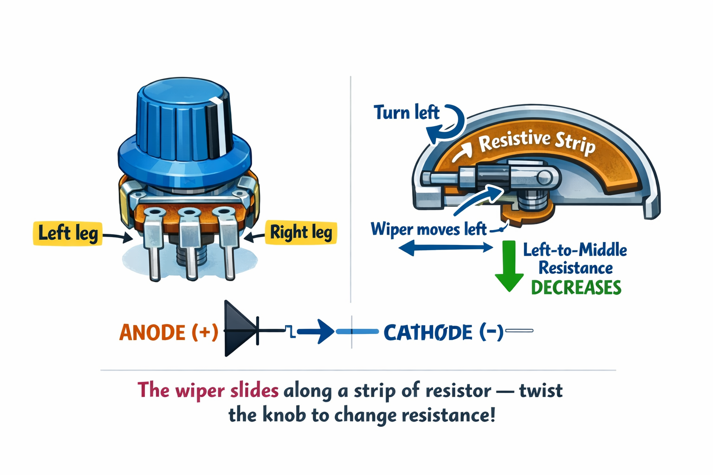

Side A — Front
⚡ ✦ ⚡ ✦ ⚡ ✦ ⚡ ✦ ⚡ ✦ ⚡ ✦ ⚡ ✦ ⚡
📚 Key Words — Learn These!
🔓
SW
Switch
A component that opens or closes a circuit. When a switch is closed, electricity flows. When open, it stops — just like a door for electrons!
🌡
POT
Potentiometer
A variable resistor with a knob you turn to change resistance smoothly from 0 ohms all the way up to its maximum (e.g. 10k ohms).
📍
W
Wiper
The middle leg of a potentiometer. It slides along a resistive strip as you turn the knob — that is what changes the resistance!
☀
MOM
Momentary
A switch that is only ON while you press it — it springs back off the moment you let go. Like a doorbell or a keyboard key!
🔓 Three Types of Switches
Push Button (Tactile)
OFF: -- -- (open)
ON: -------- (closed)
Momentary — only ON while pressed. Spring-loaded back to OFF.
Used in: doorbells, keyboards, game controllers.
Toggle Switch
DOWN: -------- (ON)
UP: -- -- (OFF)
Latching — stays in position after you flip it.
Used in: light switches, power switches on old equipment.
Rotary Switch
Turns to connect
one of several
different positions.
Multiple positions — selects from several options.
Used in: fan speed controls, and your multimeter dial!
Momentary = only ON while pressed. • Latching = stays ON or OFF.
🌡 The Potentiometer — A Variable Resistor
A potentiometer has three legs. The middle leg is the wiper — it slides along a resistive strip as you turn the knob. Turn the knob and the resistance between the middle leg and either end changes!
Left leg ---- full resistance track
Middle leg ---- WIPER (moves as you turn)
Right leg ---- other end of track
Left to Right: ALWAYS = max (e.g. 10kΩ)
Left to Middle: changes 0 → 10kΩ as you turn
Right to Middle: changes 10kΩ → 0 as you turn
(One side goes up, the other goes DOWN!)
Turn the volume knob on a speaker? That IS a potentiometer!

Side B — Back
💡 My Activity Today — Build an LED Dimmer!
9V (+) ----[POT left leg]
[POT middle leg]----[100Ω resistor]----LED (+)----LED (-)----9V (-)
Steps:
1. Connect 9V (+) to the LEFT leg of the potentiometer
2. Connect the MIDDLE leg to the 100Ω resistor
3. Connect the resistor to the LED long leg (+)
4. Connect LED short leg (-) to 9V (-)
5. Turn the knob → watch the LED smoothly brighten and dim!
6. BONUS: Add a push button between 9V (+) and the potentiometer to switch it on/off
The 100-ohm resistor is a safety guard — when the pot is at 0 ohms, the resistor keeps the LED safe from too much current!
✅ Components I Used:
- 10kΩ potentiometer
- Push button
- LED (red or yellow)
- 100Ω resistor
- 9V battery + clip
- Breadboard + wires
🧠 Quiz Time! Fill in the blanks.
1. A potentiometer is a ________________ resistor — you turn a knob to change resistance.
hint: "variable"
2. A push button is "momentary" — it is only ON while you are ________________ it.
hint: "pressing"
3. The Wand measures left-to-middle: 3kΩ. Right-to-middle: 7kΩ. Together they add up to ________________.
hint: "10kΩ"
🆕 BONUS: What part of a potentiometer MOVES when you turn the knob?
hint: "the wiper (middle leg)"
🔬 Activities / Experiments You Did Today!
A
Switch Scavenger Hunt
Walk around and find at least 6 switches.
Sort them into MOMENTARY (only on while pressed) or LATCHING (stays on). Switches are everywhere!
B
Wand Check — Watch Resistance Change!
Set Wand to resistance mode (Ω). Touch probes to the middle and one outer leg.
Slowly turn the knob and watch the number change in real time from near 0 to near 10k!
C
Build the LED Dimmer
Wire the potentiometer, 100Ω resistor, and LED on a breadboard.
Turn the knob — the LED smoothly goes from bright to dim. Just like a real room dimmer switch!
D
Add a Button Switch
Put a push button between 9V (+) and the potentiometer left leg.
Now you have TWO controls: button switches it on/off, knob controls the brightness — just like stage lighting!
🏭 Try at Home: Find Real Potentiometers!
Look around your home for knobs that change something smoothly.
The volume knob on a speaker or TV? That is a potentiometer!
A remote-control car throttle? Potentiometer!
Old video game joysticks? Two potentiometers — one for left/right, one for up/down.
How many can you find?
🔧 Troubleshooting Quick Guide
| Problem | Quick Fix |
|---|
| LED won't light at all | Check LED polarity — flip it around |
| LED always full brightness | Check pot wiring — use middle leg! |
| LED won't dim | Make sure wiper (middle leg) is connected |
| Button does nothing | Breadboard rows may not be bridged — check position |
| Numbers won't change on Wand | Probes must touch middle leg + one outer leg |
Coming Up Next → Lesson 9: Buzzers and Sound! 🔔
We add SOUND to our toolkit with buzzers. You will build a door alarm and use your Magic Measurement Wand in continuity mode to explore the difference between connected and disconnected circuits. Get ready to make some noise!